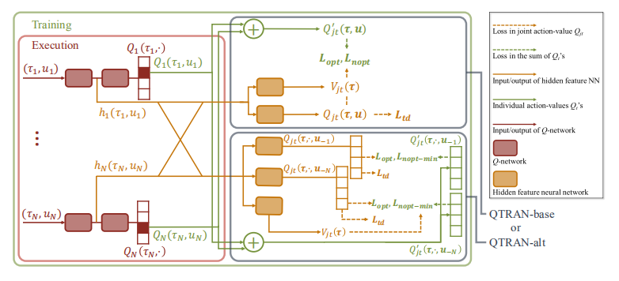
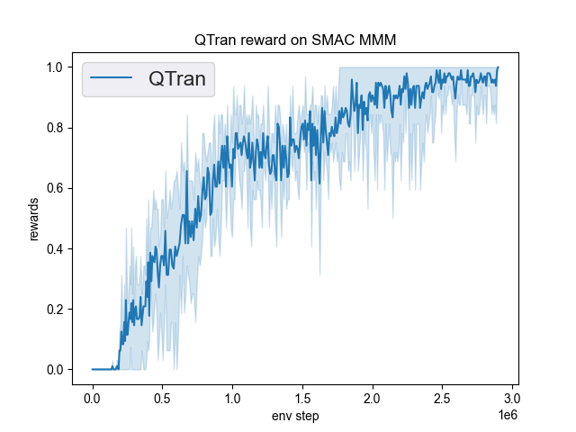
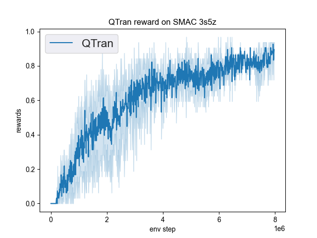
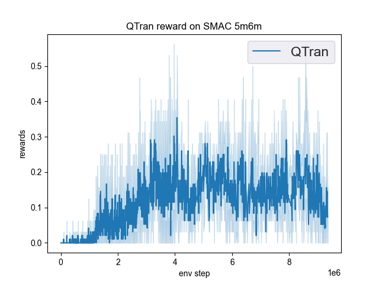

QTRAN¶
Overview¶
QTRAN is proposed by Kyunghwan et al.(2019). QTRAN is a factorization method for MARL, which is free from such structural constraints and takes on a new approach to transform the original joint action-value function into an easily factorizable one, with the same optimal actions.
Compared to VDN(Sunehag et al. 2017), QMIX(Rashid et al. 2018), QTRAN guarantees more general factorization than VDN or QMIX, thus covering a much wider class of MARL tasks than does previous methods, and it performs better than QMIX in 5m_vs_6m and MMM2 maps.
Quick Facts¶
QTRAN uses the paradigm of centralized training with decentralized execution.
QTRAN is a model-free and value-based method.
QTRAN only support discrete action spaces.
QTRAN is an off-policy multi-agent RL algorithm.
QTRAN considers a partially observable scenario in which each agent only obtains individual observations.
QTRAN accepts DRQN as individual value network.
QTRAN learns the joint value function through Individual action-value network, Joint action-value network and State-value network.
Key Equations or Key Graphs¶
The overall QTRAN architecture including individual agent networks and the mixing network structure:
{kind=link}
QTRAN trains the mixing network via minimizing the following loss:
{kind=link}
Extensions¶
QTRAN++ (Son et al. 2019), as an extension of QTRAN, successfully bridges the gap between empirical performance and theoretical guarantee, and newly achieves state-of-the-art performance in the SMAC environment.
Implementations¶
The default config is defined as follows:
- The network interface QTRAN used is defined as follows:
- ding.model.template.qtran
alias of <module ‘ding.model.template.qtran’ from ‘/home/runner/work/DI-engine/DI-engine/ding/model/template/qtran.py’>
The Benchmark result of QTRAN in SMAC (Samvelyan et al. 2019), for StarCraft micromanagement problems, implemented in DI-engine is shown.
smac map |
best mean reward |
evaluation results |
config link |
comparison |
|---|---|---|---|---|
MMM |
1.00 |
 | Pymarl(1.0) |
|
3s5z |
0.95 |
 | Pymarl(0.1) |
|
5m6m |
0.55 |
 | Pymarl(0.7) |
References¶
QTRAN: Learning to Factorize with Transformation for Cooperative Multi-Agent Reinforcement Learning. ICML, 2019.